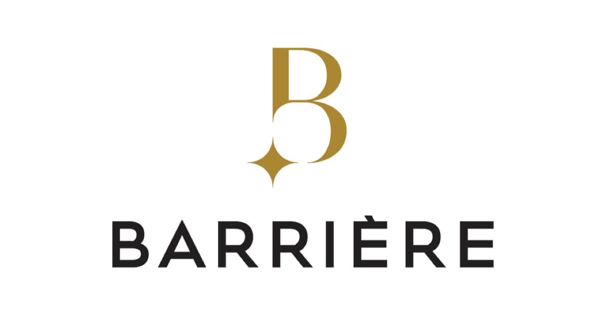
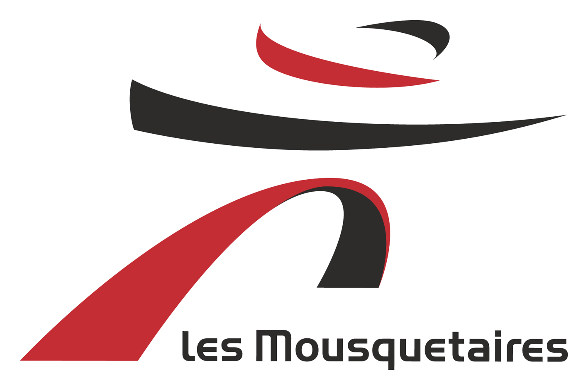

🎓 3ème année Audencia Bachelor filière management commercial
En 2020, j'ai pris la décision de me lancer un challenge, associer vie scolaire et milieu professionnel.
Alternance d'un an, dans le cadre de la dernière année de Bachelor, au sein du service marketing SVA et la filière Bœuf AgroMousquetaires. Au cœur de la Bretagne, la SVA Vitré est un abattoir multi-espèce, le plus grand de France.

Voiturier Hôtel Barrière l’Hermitage La Baule *****
Juillet - Août 2020
• Accueil et prise en charge de la clientèle lors de son arrivée
• Prise en charge des véhicules de la clientèle
• Informer et justement renseigner la clientèle
• Répondre à leurs attentes pour un séjour en toute tranquillité et discrétion

Aide Boucher
Boucherie Bouilland 2015 - 2016 / Intermarché 2017 - 2019
Juin - Juillet 2015 à 2019
• Préparation culinaire
• Mise en rayon et gestion des stocks
• Entretien des laboratoires
Bachelor of Business Administration BBA
2018 - 2021
3ème année : alternance marketing, développement d'opportunités chez SVA Jean Rozé en association avec la filière management commercial :
• Négociation (stratégie de négociation, politique d'investissement, vente complexe, international negotiation)
• Stratégie (stratégie commerciale, management de la force de vente, optimisation de la performance commerciale)
• Commercial 3.0 (webmarketing, social selling et digitalisation relation client)
2ème année : Exchange semester en Chine, sur les thématiques de la microéconomie, la stratégie d'entreprise, les fondamentaux de la finance, le commerce international et la place du manager au sein d'une entreprise. Suivi du training vente au second semestre : épauler en tant que force de vente l'association Le Goût des Autres à Nantes.
1ère année : découverte et apprentissage du marketing, études de marché, ventes, analyse de l’activité, droit. Stage d'expatriation à Londres dans l'optique de perfectionner la pratique de l'anglais.